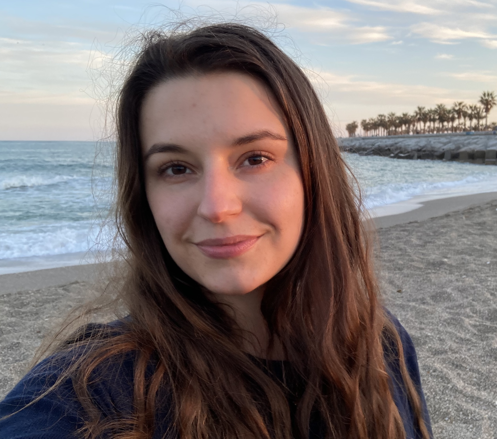

The person
behind the nails.
I grew up in the Polish mountains close to the Czech border. At 20, I moved to Cambridge to start my undergraduate degree in Maths. I stayed in the UK for a masters, then a PhD, and somehow ended up in Oxford doing nail art alongside a career in Health Data Science. Not what anyone would have predicted, least of all me.
I started painting my nails at around 13, and because the polishes I was imagining didn't exist in the shops I had access to, I just started mixing and layering and skittle-ing until something close enough appeared. Later, I kept the nail art going partly because it turns out making something with your hands is quietly good for the mind.
The mathsy brain, however, never fully switches off. I'll break down a formula like I'd break down a problem - what's in it, how it behaves, why it does what it does under different lights. But I also just colour-vibe. Some combinations are right and some are wrong and I know this before I can explain it, if I even can explain it. Both these sides exist together.
I'm genuinely enthusiastic about new nail polishes and I hope that shows in my work. UV-thermals with glitter and shimmer shifting in the same formula still make me stop mid-whatever and just stare. A shimmer so fine it looks different in every light. A really well-made flakie. There's a lot going on in a bottle when you actually stops to think about it, and that's what I want to show.
Not just pretty. Precise, interesting, honest to the formula.
I only work with vegan and cruelty-free brands. I've been vegetarian since around 13 and caring about animals isn't really something I can switch on and off depending on context. It matters to me who I work with.
Now, if you made it this far, there's a secret page you can visit, if you want - click at your own risk! →